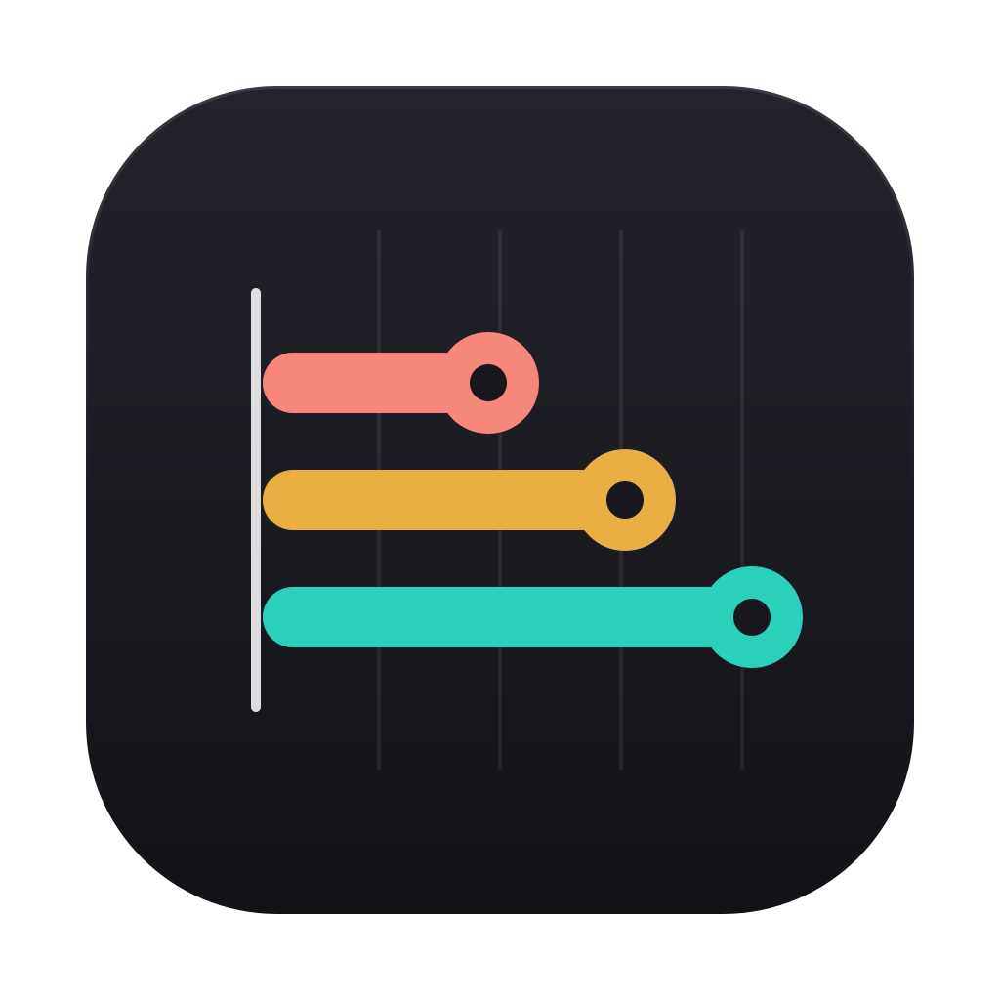

Crastio DownloadThe easiest way: open a ticket on GitHub. Say which version you use (Settings › About), Mac or Windows, and what happened. A screenshot helps.
Tickets are public: don't put anything private in them (remove names, emails and personal tasks from screenshots). If you know me, you can simply tell me directly.
Useful things to tell me: what you tried first, what confused you, what you expected to happen, what you missed.
See the download page for the first-launch steps on Mac and Windows (Crastio isn't signed with an Apple or Microsoft certificate yet).
An account is optional. During the beta you create it with your GitHub account (Crastio only receives your name, email address and picture); sign-up by email opens soon. To work on a project with someone, both of you need an account: the owner invites the other by the email of their account, or with a code.
Everything is stored on your computer. Export it from Settings › Data (JSON for everything, CSV for your tasks). With an account, changes sync when you're online; Crastio keeps working offline.
Found a vulnerability? Please don't post it publicly: report it privately on GitHub. See the security page.
Questions about your data: open a ticket on GitHub (public — for something private, use the security form above and say it's a privacy request).